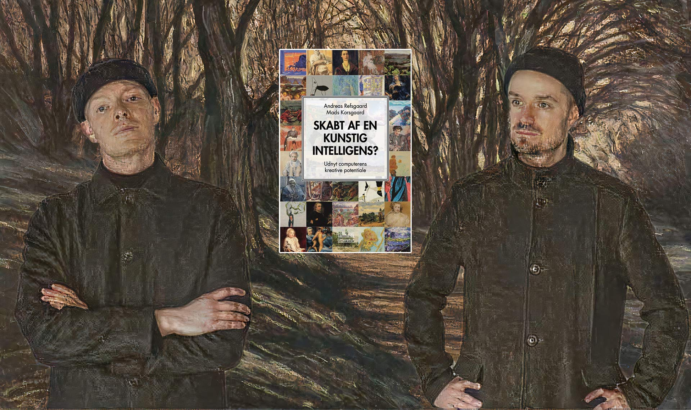

Computerens utrættelige regnekraft og fremskridtene inden for kunstig intelligens har gjort algoritmer allestedsnærværende i vores liv og arbejde. Men kan algoritmer også hjælpe os i kreative arbejdsprocesser?

Denne bog handler om, hvordan computeralgoritmer og nye digitale teknologier som machine learning og kunstig intelligens kan udvide rammerne for kreativt arbejde. Bogen tilbyder en forståelse af, hvordan algoritmer kan anvendes kreativt, og den indeholder massevis af eksempler. Desuden diskuterer bogen nogle af de konsekvenser, det kan have, når vi begynder at integrere kunstig intelligens i kreative arbejdsprocesser.
Mads Korsgaard er psykolog med speciale i mekanismerne bag kreativitet og innovation, og Andreas Refsgaard er digital kunstner med en legende tilgang til kunstig intelligens. Ved at kombinere deres forskellige fagområder udforsker forfatterne computerteknologiens kreative mulighedsrum. Køb bogen her.
Prøv værket (åbner i en ny fane og kræver webkamera)

[Link + bedre billede kommer snart...]
Prøv værket (åbner i en ny fane)
Prøv værket (åbner i en ny fane)
Prøv værket (åbner i en ny fane)
Prøv værket (åbner i en ny fane)

Prøv værket (åbner i en ny fane)
Prøv værket (åbner i en ny fane)

Prøv værket (åbner i en ny fane)
Prøv værket (åbner i en ny fane)
Prøv værket (åbner i en ny fane)
Prøv værket (åbner i en ny fane)
Prøv værket (åbner i en ny fane)
Her finder du links til software, lærebøger og videoguides, hvis du selv vil lære mere og for alvor fordybe dig i kreativ programmering og kunstig intelligens. Der findes et væld af materialer, og nedenstående er kun et udpluk. Du kan finde mange flere links på den kuraterede liste Awesome Creative Coding af Terkel Gjervig.
p5.js: softwarebibliotek i JavaScript rettet mod kunstnere, designere, undervisere og begyndere. Alle eksempler fra denne bog er lavet med p5.js
ml5.js: Et simpelt og lettilgængeligt bibliotek til at eksperimentere med kunstig intelligens direkte i browseren. Fungerer godt sammen med p5.js
Processing: Desktopsoftware i Java rettet mod kunstnere, designere, undervisere og begyndere
RiTA: Et softwarebibliotek rettet mod generativ litteratur. Fungerer godt sammen med Processing og p5.js
RunwayML: Kommerciel platform til avanceret brug af kunstig intelligens, særligt rettet mod visuel kunst
Machine Learning for Artists: Eksempler, artikler og guides til kreativ brug af kunstig intelligens i Python og ml5.js
Max: Visuelt programmeringssprog til lyd og grafik
Code as a Creative Medium af Golan Levin & Tega Brain (2021)
Generative Design af Benedikt Gross, Hartmut Bohnacker, Julia Laub & Claudius Lazzeroni (2018)
The Nature of Code af Daniel Shiffman (2012)
The Coding Train af Daniel Shiffman om p5.js, ml5.js og meget mere
Kreativ Kodning (på dansk!) af Kristian Gårdhus Wichmann om p5.js
Artificial Images af Derrick Schultz om visuelt kunst med kunstig intelligens